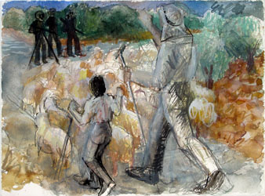

| Introduction |
| The Massacre |
| Northern Fields |
| Inside the Village |
| First Wave |
| Second Wave |
| Third Wave |
| Fourth Wave |
| Sixth |
| Seventh |
| Ninth |
| Roster of Victims |
| Witnesses |
| Artist's Notes |
| Contact me |
| ="pointer-events:none;cursor:default;" href="http://www.art.net/samia">Exit |
MEMORIAL on the 50th Anniversary of the Kafr Qasem Massacre
The Third Wave of the Massacre
Testimony of Abu Butros Amer known as Lamumba Kafr Kasem
Interview with Abu Butros Amer who was a witness to part of the massacre. Abu Butros was ill at the time of the interview and needed to lay down several times. He died a few years later. I recorded this testimony in Kafr Qasem on November 8, 1999 at his home.*
After I told Abu Butros that I was interested in details and in the historical facts not in fiction he told me that he himself has no respect for those who invent out of their own minds. After hearing his testimony, I resolved to redo this watercolor below based on earlier limited knowledge.

The Shepherd Uthman Isaa and his son Fathi Isaa
We began talking about the shepherd Uthman Isaa. I had told him what I had heard from other Kafr Qasemites already. He said: �The son was killed. He was killed first.� In seeking to develop a mental picture, I asked later how the son fell and if his body flew in the air from the power of the bullets. Abu Butros said: �He just collapsed on the ground, he just went down. They all shot at him at the same time even the Bryn. There were three weapons aimed at that boy. The Bryn, the Oozy, and a shotgun (barude). Ba ba ba ba ba ba (he made the sound of the automatic repeat shooting of the Bryn) they rained the bullets at him.�
�There were three soldiers doing the killing including the captian Malenki who had the Oozy. One more came in a Jeep.�
I asked about the color and makeup of the goats.
�The flock was of black goats. They were their own goats. The family owned nearly a thousand goats. The herd that day was much more than a hundred black goats. They were all black. [When Kafr Qasemites talk about the family, they mean the extended family consisting of one to four hundred people or more.]
We were stopped. Our truck was stopped on the right hand side of the road and the shepherd and his flock were walking on the left hand side of the road, on the lower red soil. It was wilderness and empty at that time. The son was in the front of the herd and the father in the back. They were passing us in the same direction homeward that we wanted. They were going opposite of the shooting coming at them. The flock [reacting to the shooting] then turned and ran backward, in the direction they had been coming from, that is back toward us. The father who was in the back of the flock, instead of running with them to escape the shooting, began to run forward and to shoo the goats trying to get them back on track. They Israelis killed him.
They had shot and killed the boy when he had come nearly abreast of them (at the point where the memorial stone is located now). When they shot at the boy our driver stopped the truck and turned off the engine. I was sitting on the left side and saw how they shot the boy and father. I saw it all clearly. We all began to believe that we would all die; and so one person said that that was it and that we should prepare ourselves; and so many of us prayed and recited the Fatiha and believed completely that we too would all be killed.
We were stopped. The jeep came and stopped, one of them stood on the jeep and aimed the gun at us in the open back of the truck. One, Malenki, stood at the door of the truck to the right opposite the driver with his elbow on the window where Muhammad Said, known as Abu Ruda, was seated next to the driver. Abu Ruda was wearing an umbaz and a hatta and igale and he was a heavy man. [Abu Ruda was wearing the traditional robe and headdress of a Palestinian Village.]
�Malenki asked: (�Fein kanyeen� ) �Where were you?� and the Abu Ruda answered �At work sir� (Fil-�amal ya sidi)�� I asked Abu Butros if in fact Abu Ruda being older than Malenki did in fact use the term �sidi� in talking to him and Abu Butros assured me that he did. Abu Butros continued, �Then Malenki said: �If you want to live, then all of you go to one house. Follow me� The driver, Abd Allah Isma�il asked, �Shall we go in front of you or follow you Sir� and he answered �In front of me� And so they turned on the motor and proceeded. Our truck moved on and no one shot at us. Our wheels were not shot. They were whole.�
I had been given an earlier description by another survivor of this truck and he had said that the slow ride was very bumpy and that they were going over dead bodies. So I asked Abu Butros if the wheels where shot off and made the ride bumpy or if they had driven over bodies He said: �We did not drive over bodies.�
�By then there were four already dead beside the boy and his father, they are Ghazi, Abu Samaha, Abdal Raheem Al Sameer and Ahmad AlSous. Mahmoud AlSous had run away and escaped. The soldiers (doing the killing) were two standing and one lying on the ground with the Bryn. When the jeep came it was the third soldier. There were three all together doing the killing�
I asked what they where wearing and the entire family answered that the workers in the back were all wearing work clothes with the exception of one man in the back who was wearing an Umbaz. (probably abu Samaha since he was a trader) The work clothes of the time were heavy and course cotton Kaki of a dark color. I asked if it was the color of the dark Kaki that the British soldiers then wore and Abu Butros said: �Yes, exactly.� I asked about the hat the workers wore and if any wore a hata wa igale coming home from work and he said no. We discussed the hat that many of the workers wore and we drew it until it seems that I understood how it was and Abu Butros had described it as the Arab hat except a bit bigger and deeper. So it was a rounded cone fitting to the scull but with a band at the bottom. (see notebook)
Abu Butros told me that in those days the plains were planted with wheat and that watermelon was still very little planted as it was brought to the area only in 1953.


Khamise Amer mother of Lamumba Kafr Qasem with the women of the ninth wave
of killing as they plead with the soldiers, and later as she falls in the collective
embrace in death of the women.
Then I asked about Wednesday October 31, 1956, when everyone went out for the first time after the long curfew, searching for what happened. Abu Butros had told me that his mother was in the last and final wave of the killing and had died in it; and that his brother had escaped the first wave of the killing, This uncle being the paternal unkle of Rose Amer. Abu Bustros said: �On Wednesday, of course, every one went out searching, looking and asking. We looked for remains of my mother and we found her grey Abaye which she wore over her clothes and we found both her shoes.�
I asked the color of the Abaye and they had said grey and I asked if they saved the clothes and they said of course but that now they do not know where they are. At that point Rose interjected that: �My uncle always kept the pants he wore that day and in the pants was two bullet holes where the bullet had gone in and come out.� She then pointed to the spot behind the knee where the bullet went in and out without injuring her Uncle.
Rose�s paternal uncle was a quarry worker and he is black like this entire Amer family. Rose Amer had told me earlier that her father being very political and active was called Lamumba Kafr Qasem. He then told me that he wanted to avenge his mother and immediately became an activist. And that the military judge used to call him that.
The uncle�s name is Mustafa Khamees Amer known as Abu Injeem. When he was injured he ran in the direction of the sea and eventually went to Jaljulia and hid for two days.
I asked Abu Butros if his brother when he returned from Jaljulia was able to speak and tell what happened to him, he answered that all was normal with his ability to talk to them.

Rose Amer, daughter of Abu Buros AKA Lumumba Kafr Qasem
While waiting for Abu Butros at his home, I recorded what his daughter, Rose Amer, told me.
Rose said that the area of the massacre was called Al-Filmaya but that she does not know what the name means or why the area is called thus. She told me exactly where the last wave of killing took place. It was exactly at the spot where I had first met her on the right side of the street which leads into the village from the main road right at the crossing of the monument.
Rose Amer and her mother talked with me, Im Beatrice spoke to me about the massacre. [The name Im Beatrice means in English, mother of patrice which is the name given her son in admiration of Patrick Lamumba.] Im Beatrice said that she was not in the massacre as she was born in 1948 and as a child she came to consciousness as a refugee. At one time they were in the refugee camps around Nablus.
In regards to the massacre of 1956, Rose said that her father told them that all the roads and pathways coming into the village were closed with the exception of those to the east of the town leading to Jordan. She said that they had closed everything except to the east hoping that the killing and the terror would frighten people into packing up and abandoning their homes to the Israelis.
Rose said that her father was in the same truck as Abu Sameeh and that they saw the massacre. It was the truck that escaped. She said that they saw the Shepherd and his son being massacred. The father and others in the truck had talked about how the driver was afraid of being fined and that he asked some of the passengers to get out and to walk. Some did get out and decide to walk and her father being 17 wanted to do the same but then they heard the shooting and they promised the driver that they would divide the price of the fine among them and pay him if he were fined. Thus, it is told by Rose, that they got back in the truck and drove.
Rose said that they saw the sheep coming and that they saw the little shepherd boy die. First they killed the son and the sheep began running toward the truck and the father was shooing them and he did not see his son had been shot. He was only paying attention to the sheep coming suddenly at him.
Then Dihan stopped them and asked questions, he let them go and he followed them with his jeep.
The people in the truck saw the shepherds and his son die. The father had gone to get the son in the field and to get him to hurry home. And, as the boy was in the front and the father in the back shooing the sheep, the son was shot first the father second.
She said that her father claims that Abu Sameeh is mistaken in saying that the truck drove over bodies.
Web posting and author: Samia A. Halaby, October 2006.
![[Art on the Net]](/images/artnet_button.gif)